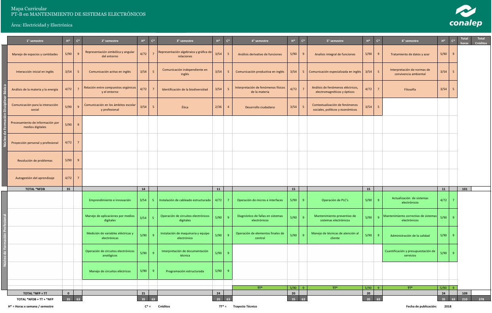
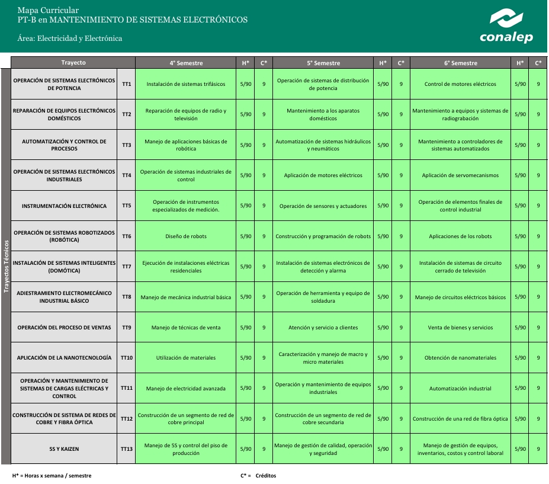

Proporcionar la informacion a los estudiantes ,estructura y contenido del plan de estudio de la carrera de electronia.
Plan de estudios de los últimos semestres de la carrera, en el cual los estudiantes deben llevar instalaciones de sistemas trifasicos, manejo de aplicaciones basicas, aplicacion de motores electricos , importantes para desarrollarse con facilidad en el campo laboral.
